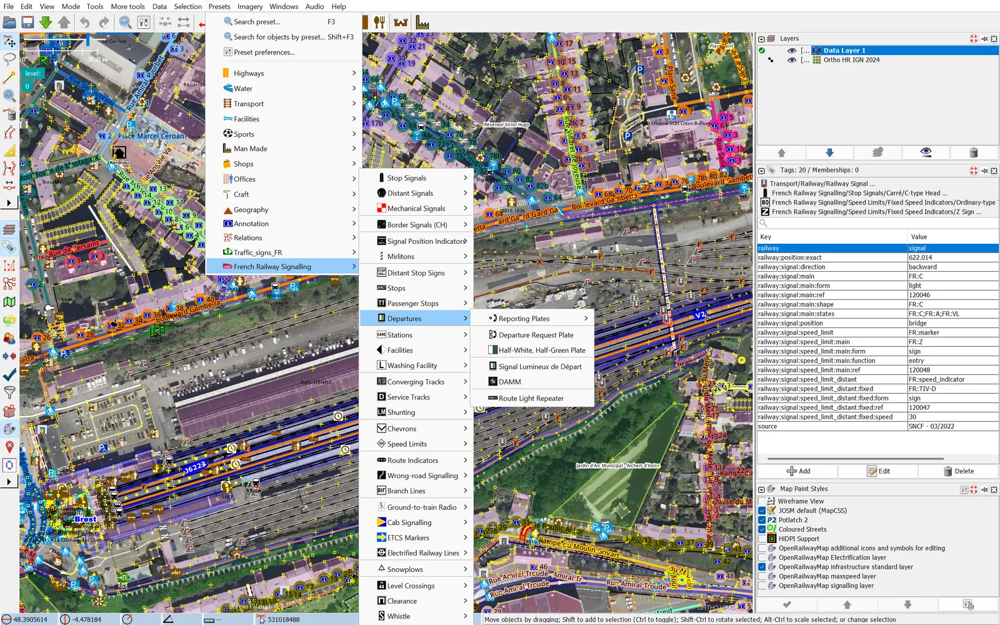

This page hosts the French Railway Signalling presets archive for the JOSM editor. These presets help map the railway signalling and infrastructure specific to France in OpenStreetMap / OpenRailwayMap.

French Railway Signalling from Available presets